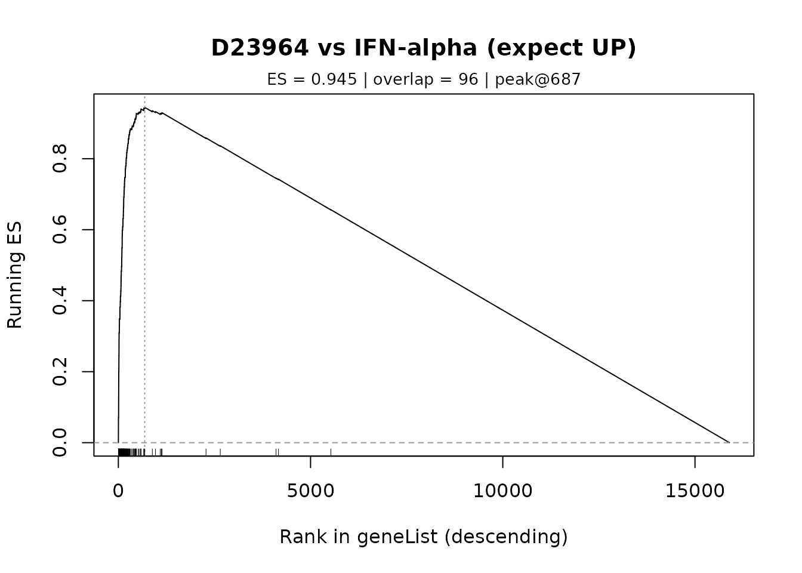
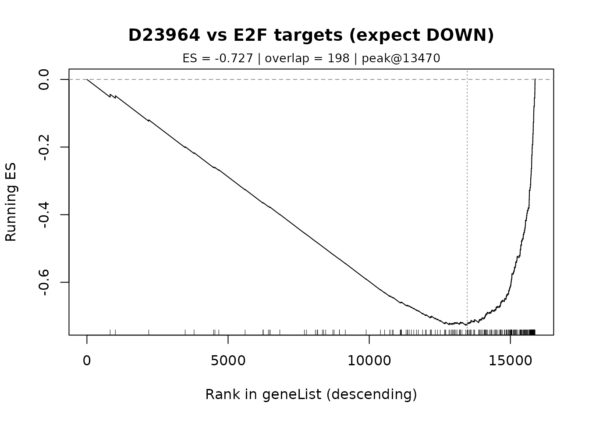

Tutorial: Multi-channel Event Definition (Viral Mimicry)
Source:vignettes/tutorial_viral_mimicry.Rmd
tutorial_viral_mimicry.RmdOverview
Some biological phenotypes cannot be captured by a single gene set direction. For example, viral mimicry is a cellular state characterized by:
- Interferon response genes UP (immune activation)
- Cell cycle genes DOWN (proliferation arrest)
GPSA allows you to define such multi-channel events by combining multiple gene sets with different expected directions.
Setup
library(GPSA)
library(msigdbr)
# Load database
db <- gpsa_load_db(preload_Z = TRUE, verbose = TRUE)
#> Preloading /Z into memory ...
#> Preloaded /Z (1062.9 MB) into RAM; subsequent queries avoid disk I/O.
#> Loaded DB: 19613 genes x 7103 signatures; Z_definition=cmap_rankZ_qnorm
# Get Hallmark gene sets
hallmark <- msigdbr(species = "Homo sapiens", category = "H")
#> Warning: The `category` argument of `msigdbr()` is deprecated as of msigdbr 10.0.0.
#> ℹ Please use the `collection` argument instead.
#> This warning is displayed once every 8 hours.
#> Call `lifecycle::last_lifecycle_warnings()` to see where this warning was
#> generated.
get_hallmark_genes <- function(gs_name) {
unique(hallmark$gene_symbol[hallmark$gs_name == gs_name])
}Defining the Viral Mimicry Event
Get Component Gene Sets
# Interferon response (should go UP)
ifna <- get_hallmark_genes("HALLMARK_INTERFERON_ALPHA_RESPONSE")
ifng <- get_hallmark_genes("HALLMARK_INTERFERON_GAMMA_RESPONSE")
# Cell cycle (should go DOWN)
e2f <- get_hallmark_genes("HALLMARK_E2F_TARGETS")
g2m <- get_hallmark_genes("HALLMARK_G2M_CHECKPOINT")
message(sprintf("IFN-alpha: %d genes", length(ifna)))
#> IFN-alpha: 97 genes
message(sprintf("IFN-gamma: %d genes", length(ifng)))
#> IFN-gamma: 200 genes
message(sprintf("E2F targets: %d genes", length(e2f)))
#> E2F targets: 200 genes
message(sprintf("G2M checkpoint: %d genes", length(g2m)))
#> G2M checkpoint: 200 genesConstruct Multi-channel Query
# Define viral mimicry as 4 channels
q_vm <- list(
IFNA = list(genes = ifna, sign = +1), # IFN-alpha should be UP
IFNG = list(genes = ifng, sign = +1), # IFN-gamma should be UP
E2F = list(genes = e2f, sign = -1), # E2F targets should be DOWN
G2M = list(genes = g2m, sign = -1) # G2M checkpoint should be DOWN
)
# The sign parameter indicates expected direction:
# +1 = genes should be up-regulated in hits
# -1 = genes should be down-regulated in hitsRunning the Multi-channel Search
out_vm <- gpsa_search(db, q_vm, return_components = TRUE)
# View top hits by total score
message("=== Viral Mimicry Top 10 (Total Score) ===")
#> === Viral Mimicry Top 10 (Total Score) ===
print(head(out_vm$res[, c("signature_id", "pbgene", "CellLineName",
"Score", "tau", "FDR_rank")], 10))
#> signature_id pbgene CellLineName Score tau FDR_rank
#> 4040 D23964 IMP3 HUVEC-C 80.82056 99.98592 0.5000000
#> 2961 D22388 PTPN2 A549 76.48941 99.95776 0.7500000
#> 1604 D20906 PXN PC-3 76.41936 99.92961 0.8333333
#> 1790 D21102 BTF3 PC-3 75.88126 99.90145 0.8750000
#> 2963 D22390 PTPN2 HT-29 75.27526 99.87329 0.9000000
#> 6029 D26955 IRF2BP2 THP-1 75.20142 99.84514 0.9166667
#> 2714 D22119 NUSAP1 PC-3 73.98689 99.81698 0.9285714
#> 6028 D26954 IRF2BP2 THP-1 73.86547 99.78882 0.9375000
#> 3837 D23634 TERT UM-UC-3 73.75627 99.76066 0.9444444
#> 6638 D27783 IGF2BP3 MOLM-13 73.38466 99.73251 0.9500000Gated Filtering: Require All Channels
The total score sums across channels, but a high score could come from just one or two strong channels. To find true viral mimicry hits, we need all 4 channels to show the expected direction.
Attach Channel Scores
res_vm <- gpsa_attach_channel_scores(
out_vm$res,
out_vm$NES_raw,
out_vm$NES_signed
)
# Preview channel scores
message("=== Sample with Channel Scores ===")
#> === Sample with Channel Scores ===
print(head(res_vm[, c("signature_id", "pbgene", "Score",
"IFNA_signed", "IFNG_signed",
"E2F_signed", "G2M_signed")], 5))
#> signature_id pbgene Score IFNA_signed IFNG_signed E2F_signed G2M_signed
#> 4040 D23964 IMP3 80.82056 23.05692 23.54559 18.73520 15.48285
#> 2961 D22388 PTPN2 76.48941 16.39841 18.13313 22.65238 19.30549
#> 1604 D20906 PXN 76.41936 19.35673 16.65328 21.14198 19.26737
#> 1790 D21102 BTF3 75.88126 23.36150 19.47264 18.23800 14.80913
#> 2963 D22390 PTPN2 75.27526 19.42001 17.51227 20.44469 17.89829Apply Gate: All Channels Positive
# Gate: all signed scores must be positive (direction matches expectation)
gated <- res_vm[
res_vm$IFNA_signed > 0 &
res_vm$IFNG_signed > 0 &
res_vm$E2F_signed > 0 &
res_vm$G2M_signed > 0,
]
gated <- gated[order(gated$Score, decreasing = TRUE), ]
message(sprintf("=== Gated Hits: %d signatures ===", nrow(gated)))
#> === Gated Hits: 2672 signatures ===
message("=== Viral Mimicry Gated Top 20 ===")
#> === Viral Mimicry Gated Top 20 ===
print(head(gated[, c("signature_id", "pbgene", "CellLineName", "Score",
"IFNA_signed", "IFNG_signed",
"E2F_signed", "G2M_signed")], 20))
#> signature_id pbgene CellLineName Score IFNA_signed IFNG_signed
#> 4040 D23964 IMP3 HUVEC-C 80.82056 23.05692 23.54559
#> 2961 D22388 PTPN2 A549 76.48941 16.39841 18.13313
#> 1604 D20906 PXN PC-3 76.41936 19.35673 16.65328
#> 1790 D21102 BTF3 PC-3 75.88126 23.36150 19.47264
#> 2963 D22390 PTPN2 HT-29 75.27526 19.42001 17.51227
#> 6029 D26955 IRF2BP2 THP-1 75.20142 19.68966 21.27978
#> 2714 D22119 NUSAP1 PC-3 73.98689 16.23092 15.33348
#> 6028 D26954 IRF2BP2 THP-1 73.86547 20.43626 22.15407
#> 3837 D23634 TERT UM-UC-3 73.75627 20.53251 16.89838
#> 6638 D27783 IGF2BP3 MOLM-13 73.38466 17.78614 18.63235
#> 1682 D20989 CTNNB1 Hep G2 73.35977 20.29685 18.23717
#> 6594 D27729 NIPBL A-375 72.89979 20.83904 18.79654
#> 4627 D24930 FANCI PC-3 72.63745 20.34521 19.50712
#> 3722 D23458 CEBPA MV4-11 72.09971 18.21334 19.79369
#> 5499 D26252 JUN PC-3 71.57069 19.03252 16.23662
#> 5517 D26277 SFPQ P3HR-1 71.56829 19.20045 20.32889
#> 1824 D21139 SUPT16H P3HR-1 70.77408 16.17653 17.97183
#> 5852 D26728 LDHB A549 70.46477 22.18994 22.84130
#> 4174 D24174 MPI TWNT-4 70.31453 17.85219 19.86785
#> 2715 D22120 NUSAP1 PC-3 70.20553 20.10387 19.14729
#> E2F_signed G2M_signed
#> 4040 18.73520 15.48285
#> 2961 22.65238 19.30549
#> 1604 21.14198 19.26737
#> 1790 18.23800 14.80913
#> 2963 20.44469 17.89829
#> 6029 19.81440 14.41758
#> 2714 23.45595 18.96653
#> 6028 18.55559 12.71955
#> 3837 20.64112 15.68426
#> 6638 21.42091 15.54527
#> 1682 19.25981 15.56594
#> 6594 17.48226 15.78195
#> 4627 18.82195 13.96317
#> 3722 17.64701 16.44567
#> 5499 19.91456 16.38700
#> 5517 17.00628 15.03267
#> 1824 20.20723 16.41848
#> 5852 13.20959 12.22394
#> 4174 18.77256 13.82193
#> 2715 16.68750 14.26687Dual-mode Scoring for Multi-channel Events
For events with many channels, GPSA provides automatic dual-mode scoring:
-
Phenocopy (Score_bi):
min()across all channel signed scores -
Discovery (Score_uni):
max()across all channel signed scores
out_modes <- gpsa_postprocess_modes(
out_vm,
attach_channel_cols = TRUE,
p_mode = "norm",
filter_positive = FALSE # Don't pre-filter, we'll examine both
)
# Phenocopy mode: all channels must agree
message("=== Phenocopy Mode Top 10 ===")
#> === Phenocopy Mode Top 10 ===
print(head(out_modes$res_similarity[, c("signature_id", "pbgene",
"Score_bi", "Balance", "Driver")], 10))
#> signature_id pbgene Score_bi Balance Driver
#> 2963 D22390 PTPN2 17.51227 0.8565681 E2F
#> 1604 D20906 PXN 16.65328 0.7876879 E2F
#> 3722 D23458 CEBPA 16.44567 0.8308541 IFNG
#> 2961 D22388 PTPN2 16.39841 0.7239153 E2F
#> 5499 D26252 JUN 16.23662 0.8153137 E2F
#> 1824 D21139 SUPT16H 16.17653 0.8005318 E2F
#> 6594 D27729 NIPBL 15.78195 0.7573263 IFNA
#> 3837 D23634 TERT 15.68426 0.7598549 E2F
#> 1682 D20989 CTNNB1 15.56594 0.7669140 IFNA
#> 6638 D27783 IGF2BP3 15.54527 0.7257053 E2F
# Discovery mode: at least one channel strong
message("=== Discovery Mode Top 10 ===")
#> === Discovery Mode Top 10 ===
print(head(out_modes$res_discovery[, c("signature_id", "pbgene",
"Score_uni", "Balance", "Driver")], 10))
#> signature_id pbgene Score_uni Balance Driver
#> 3265 D22814 HDAC5 28.23054 0.2189583 E2F
#> 2962 D22389 PTPN2 27.25872 0.2158187 E2F
#> 2796 D22203 AURKA 27.00982 0.1107756 E2F
#> 5426 D26149 FBL 26.96748 0.1095885 E2F
#> 3493 D23141 PBX1 26.87870 0.2499327 E2F
#> 5343 D26030 CBX7 26.80174 0.1190390 E2F
#> 2061 D21403 GAPLINC 26.75002 0.1883430 IFNG
#> 6243 D27282 THUMPD3 26.68152 0.3063102 E2F
#> 2708 D22113 MDM2 26.56194 0.1034633 E2F
#> 2317 D21681 ZBP1 26.53489 0.2191550 E2FGSEA Validation of Multi-channel Hits
Validate that a hit truly shows the expected pattern:
# Pick a gated hit to validate
if (nrow(gated) > 0) {
hit <- gated$signature_id[1]
gl_hit <- gpsa_get_signature(db, hit, dataset = "logFC")
# Check IFN-alpha (should be enriched at TOP)
gpsa_plot_gsea(gl_hit, ifna,
main = paste0(hit, " vs IFN-alpha (expect UP)"))
# Check E2F targets (should be enriched at BOTTOM)
gpsa_plot_gsea(gl_hit, e2f,
main = paste0(hit, " vs E2F targets (expect DOWN)"))
}
GSEA validation for a viral mimicry hit showing IFN-alpha activation and E2F suppression.

GSEA validation for a viral mimicry hit showing IFN-alpha activation and E2F suppression.
Customizing the Event Definition
Two-channel Events
For simpler events, use just 2 channels:
# Simple viral mimicry: IFN up + cell cycle down (combined gene sets)
ifn_combined <- unique(c(ifna, ifng))
cycle_combined <- unique(c(e2f, g2m))
q_simple <- list(
IFN_UP = list(genes = ifn_combined, sign = +1),
CYCLE_DOWN = list(genes = cycle_combined, sign = -1)
)
out_simple <- gpsa_search(db, q_simple, return_components = TRUE)
message("=== Simple 2-channel Top 5 ===")
#> === Simple 2-channel Top 5 ===
print(head(out_simple$res[, c("signature_id", "pbgene", "Score", "tau")], 5))
#> signature_id pbgene Score tau
#> 4040 D23964 IMP3 45.87679 99.98592
#> 6029 D26955 IRF2BP2 44.12715 99.95776
#> 2961 D22388 PTPN2 43.98372 99.92961
#> 1604 D20906 PXN 43.44806 99.90145
#> 6028 D26954 IRF2BP2 43.30814 99.87329Other Biological Events to Explore
The multi-channel approach works for any complex phenotype:
| Event | Channels |
|---|---|
| Senescence | p53 pathway UP + Cell cycle DOWN + SASP UP |
| EMT | Epithelial markers DOWN + Mesenchymal markers UP |
| Stem-like state | Stemness genes UP + Differentiation markers DOWN |
| Ferroptosis | Iron metabolism UP + Lipid peroxidation UP + GPX4 targets DOWN |
Best Practices
- Start with known biology: Define channels based on established pathway knowledge
- Use gated filtering: Total score can be misleading for multi-channel events
-
Examine channel balance:
Drivercolumn shows which channel dominates - Validate with GSEA: Confirm direction matches for each channel
- Adjust thresholds: Use stricter gates (> 0.5) for higher confidence
Summary
Multi-channel queries allow you to: - Define complex biological events as combinations of gene sets - Specify expected direction (up or down) for each component - Filter for hits where all channels satisfy the expected direction - Use dual-mode scoring to distinguish phenocopy from partial matches
Session Info
sessionInfo()
#> R version 4.3.2 (2023-10-31)
#> Platform: x86_64-pc-linux-gnu (64-bit)
#> Running under: Ubuntu 22.04.2 LTS
#>
#> Matrix products: default
#> BLAS: /usr/lib/x86_64-linux-gnu/openblas-pthread/libblas.so.3
#> LAPACK: /usr/lib/x86_64-linux-gnu/openblas-pthread/libopenblasp-r0.3.20.so; LAPACK version 3.10.0
#>
#> locale:
#> [1] LC_CTYPE=C.UTF-8 LC_NUMERIC=C LC_TIME=C.UTF-8
#> [4] LC_COLLATE=C.UTF-8 LC_MONETARY=C.UTF-8 LC_MESSAGES=C.UTF-8
#> [7] LC_PAPER=C.UTF-8 LC_NAME=C LC_ADDRESS=C
#> [10] LC_TELEPHONE=C LC_MEASUREMENT=C.UTF-8 LC_IDENTIFICATION=C
#>
#> time zone: Asia/Shanghai
#> tzcode source: system (glibc)
#>
#> attached base packages:
#> [1] stats graphics grDevices utils datasets methods base
#>
#> other attached packages:
#> [1] msigdbr_25.1.1 GPSA_0.1.0
#>
#> loaded via a namespace (and not attached):
#> [1] Matrix_1.6-4 babelgene_22.9 jsonlite_1.8.8
#> [4] highr_0.10 crayon_1.5.2 dplyr_1.1.4
#> [7] compiler_4.3.2 tidyselect_1.2.0 stringr_1.5.1
#> [10] rhdf5filters_1.14.1 assertthat_0.2.1 jquerylib_0.1.4
#> [13] systemfonts_1.0.5 textshaping_0.3.7 yaml_2.3.8
#> [16] fastmap_1.1.1 lattice_0.22-5 R6_2.5.1
#> [19] generics_0.1.3 curl_5.2.0 knitr_1.45
#> [22] tibble_3.2.1 desc_1.4.3 bslib_0.6.1
#> [25] pillar_1.9.0 rlang_1.1.2 utf8_1.2.4
#> [28] cachem_1.0.8 stringi_1.8.3 xfun_0.41
#> [31] fs_1.6.3 sass_0.4.8 memoise_2.0.1
#> [34] cli_3.6.2 withr_2.5.2 Rhdf5lib_1.24.1
#> [37] pkgdown_2.0.7 magrittr_2.0.3 digest_0.6.33
#> [40] grid_4.3.2 rhdf5_2.46.1 lifecycle_1.0.4
#> [43] vctrs_0.6.5 evaluate_0.23 glue_1.6.2
#> [46] ragg_1.2.7 fansi_1.0.6 rmarkdown_2.25
#> [49] purrr_1.0.2 tools_4.3.2 pkgconfig_2.0.3
#> [52] htmltools_0.5.7